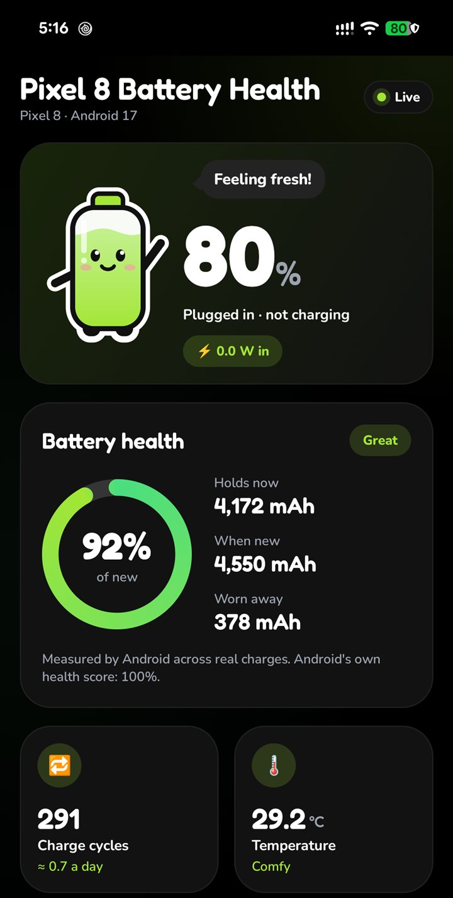

Pixel 8 Battery Health
A free Android app that shows how much charge your Pixel 8 battery still holds, how many charge cycles it has done, and what it is doing right now.

What the app shows
Battery health
How much charge the battery holds now compared with when it was new, as a percentage and in mAh, with the amount worn away.
Charge cycle count
The cycle count Android keeps for the battery, and how many cycles a day you average.
Live power
Watts flowing in or out of the battery, with a graph of the last two minutes. Updates every second.
Temperature, voltage, current
Battery temperature with a comfort hint, voltage, charge or drain current in mA, and charge stored right now.
Battery age
The date the battery was made, the date it was first used, and how long it has been in use.
Charging
Charging status, charger type (wall, USB, wireless) and the time left until full.
How to check your Pixel 8 battery health
- On your phone, tap Download APK.
- Open the downloaded file. When Android asks, allow your browser to install apps.
- Open Pixel 8 Battery Health. Charge cycles, temperature and live power show right away, and the Battery health card shows an estimate.
- For Android's measured capacity, its health score and the battery dates, grant three permissions once from a computer (below).
Unlock measured capacity with adb (optional)
Android keeps these readings behind system permissions that only a computer can grant. Turn on Developer options and USB debugging, install Android platform-tools, connect the phone and run:
adb shell pm grant dev.rubiks.batterybuddy android.permission.BATTERY_STATS
adb shell pm grant dev.rubiks.batterybuddy android.permission.DUMP
adb shell pm grant dev.rubiks.batterybuddy android.permission.PACKAGE_USAGE_STATS| Permission | Unlocks |
|---|---|
DUMP and PACKAGE_USAGE_STATS | Battery capacity measured by Android across real charges (last, min and max) |
BATTERY_STATS | Android's battery health score, manufacture date and first-use date |
The grants stay through app updates. Uninstalling the app removes them. Without them, the app estimates health from the current charge.
Questions
How do I check battery health on a Pixel 8?
Install Pixel 8 Battery Health and open it. The Battery health card shows how much charge the battery holds now compared with when it was new, as a percentage and in mAh. For Android's own measured capacity, grant three permissions once with adb, as shown above.
How do I see the battery cycle count on a Pixel 8?
Open the app. The Charge cycles tile shows the cycle count Android keeps for the battery, plus your average cycles per day. It works without a computer on Android 14 and newer, which every Pixel 8 runs.
What is the Pixel 8 battery capacity when new?
The app uses 4,550 mAh as the Pixel 8 design capacity and compares the measured capacity with it. For example, a Pixel 8 that holds 4,172 mAh is at 92% battery health.
How accurate is the health percentage?
With the adb permissions granted, the app uses the capacity Android measures across real charges and shows its range. Without them, it estimates the full capacity from the charge stored right now, which is rougher and only shown above 15% charge.
Does it need root?
No. The optional permissions are granted with adb from a computer. No root is needed.
Does it work on the Pixel 8 Pro, Pixel 8a or other phones?
It installs on any phone with Android 8.0 or newer and shows live readings. The design capacity is built in for the Pixel 8 only. On other phones the app reads it from Android's power profile, which has not been tested. The cycle count needs Android 14 or newer.
Is my battery data sent anywhere?
No. Battery readings stay on the phone. The app shows a banner ad from Google AdMob, which uses the network. See the privacy policy.
How do I check the download is genuine?
Compare these with the APK you downloaded:
APK SHA-256: 3486d864fba5cd3dd3ce7400db034859a62fe56e647bf50e8b7acef0b2088a70
Signing certificate SHA-256: f02d11df8b793a903a44286f3a3ede52c155cd09756d3c8578a22aac2df846ee